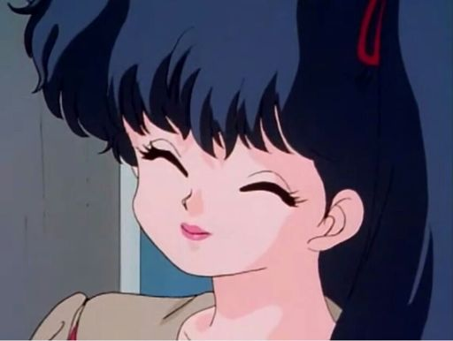

ğŸ Kodachi Kuno

Kodachi Kuno es la hermana menor de Tatewaki Kuno y una gimnasta experta.
🌀 Personalidad
Es excéntrica, manipuladora y usa trucos sucios en combate.
❤️ Relaciones
- Ranma Saotome: Está obsesionada con él.
- Tatewaki Kuno: Su hermano mayor.
🔠Curiosidades
- Usa armas ocultas en sus actuaciones de gimnasia rÃtmica.
- Su risa es icónica en la serie.
🔊 Escucha su voz
🔙 Volver a la lista de personajes